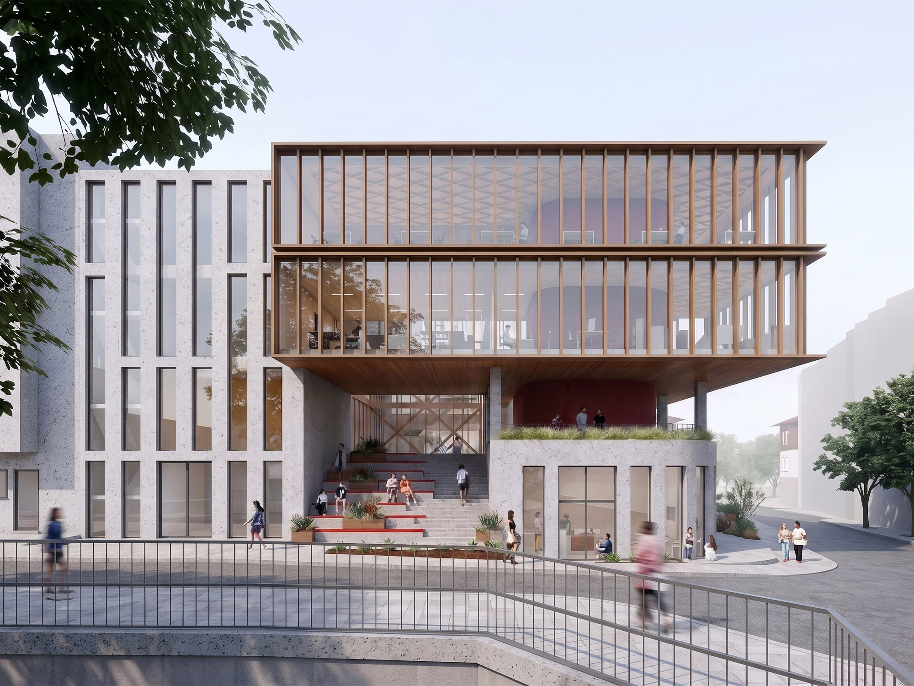
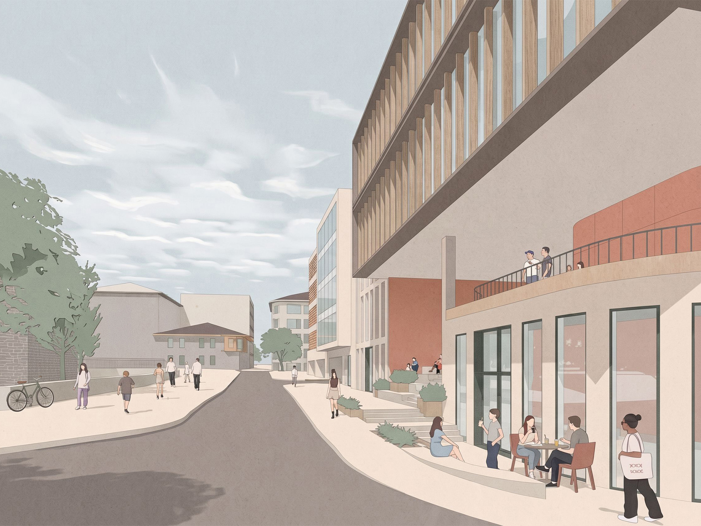
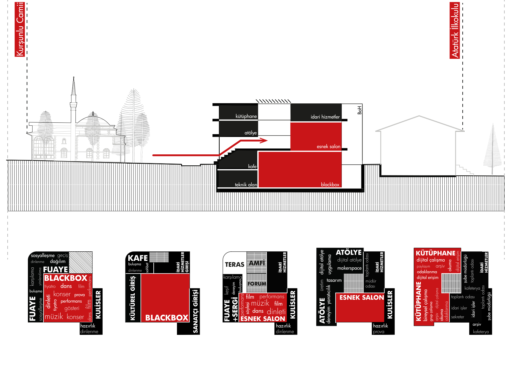

Muğla Büyükşehir Belediyesi Sosyal, Kültürel ve İdari Hizmetler Binası
Muğla'nın yerel coğrafyası, iklimsel verileri ve özgün kentsel dokusuyla güçlü bir diyalog kuran proje; idari, sosyal ve kültürel işlevleri bütüncül ve geçirgen bir strüktür altında bir araya getirir. Yapı, kamusal kullanımı teşvik eden açık ve yarı açık mekan kurgusu, yerel malzeme kullanımı ve sürdürülebilir pasif iklimlendirme stratejileriyle kentin günlük yaşantısına dahil olan esnek bir odak noktası olarak kurgulanmıştır.



